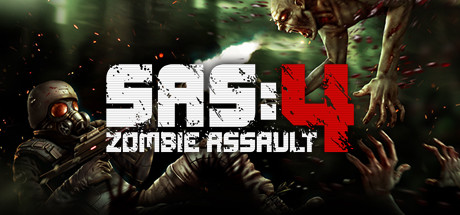

Art of War 3: Global Conflict
Game strategi real-time klasik yang unik dengan kontrol langsung untuk komandan sejati yang tidak takut menghadapi musuh dalam pertempuran PvP real-time! Bagi mereka yang ingin merasakan sensasi kemenangan atas lawan yang masih hidup! Bagi mereka yang dapat berpikir seperti ahli strategi dan bertindak tegas dalam situasi medan perang apa pun! Ini bukan tempat untuk yang penakut!
Art of War 3: Global Conflict (AOW) - adalah game online strategi real-time dalam tradisi terbaik game RTS PC klasik lama. Pimpin, taklukkan, dan kalahkan musuh Anda di medan perang! Dalam game perang modern ini, Anda harus bertarung dengan pemain lain dalam pertempuran PvP, menciptakan taktik tempur baru, mengembangkan strategi kemenangan Anda, dan meningkatkan infanteri, kendaraan serbu, tank, angkatan laut, dan angkatan udara untuk mencapai supremasi atas musuh dalam pertempuran.
Aksinya berlangsung dalam waktu dekat. Dunia dilanda konflik global antara dua faksi yang bertikai - Konfederasi dan Perlawanan. Pilih sisi Anda dan bertarung bahu-membahu dengan komandan lain untuk menang dalam Perang Dunia ini. Ambil sisi Konfederasi dan lindungi dunia dari tanda bahaya. Bergabunglah dengan para pemberontak dan hancurkan sistem dominasi global
Game strategi perang modern online, real-time (RTS) ini memberi Anda kesempatan untuk merasa seperti jenderal medan perang. Pimpin, taklukkan, bangun markas, latih infanteri, produksi tank serbu dan kendaraan lapis baja, pesawat tempur, dan kapal perang untuk mengalahkan musuh. Ikut serta dalam Perang Dunia. Gunakan senjata super dan lepaskan kekuatanmu! Bergabunglah dengan klan bersama teman-temanmu dan lawan klan lain untuk menguasai dunia. Hancurkan musuhmu!
Info Selengkapnya Klik Disini!

SAS:4 Zombie Assault
Singkirkan mayat hidup! Senjata dan baju besi luar biasa yang dapat diupgrade, keterampilan kelas yang unik, dan kerja sama 4 pemain! Mainkan penembak zombie paling intens di ponsel, dari pembuat Bloons TD 5.
Wabah virus di planet trans-federasi yang jauh menimbulkan kengerian dari masa lalu umat manusia. Gerombolan zombie yang kuat dan berkembang pesat mengancam keberadaan umat manusia, dan satu-satunya yang mampu melawan adalah pasukan khusus SAS yang sangat terampil dan bersenjata lengkap. Pilih dari 3 kelas karakter, maksimalkan pohon keterampilan yang sepenuhnya dapat disesuaikan, dan pilih dari ratusan senjata dan baju besi untuk membangun pahlawan pembunuh zombie terbaik. Mainkan level yang dinamis dan menantang dalam single player atau 4 multiplayer kooperatif dan berikan harapan terbaik terakhir bagi peradaban kita yang hancur.
AKSI INTENSE
Zombi berkerumun di layar, meledak berkeping-keping di bawah hujan pelurumu. Masing-masing dari 17 jenis zombie unik memiliki serangan dan perilaku khusus, dan mereka dapat berevolusi - mewujudkan kekuatan baru yang menakutkan saat Anda maju melalui permainan. Dan saat Anda merasa telah mengalahkan mereka semua, bos zombie yang buas memburu Anda, memuntahkan cacing asam atau menyerbu mengejar Anda dalam mode rage. Pelajari kekuatan dan kelemahan mereka saat kamu memimpin aksi di 7 peta berbasis cerita dengan berbagai kondisi kemenangan.
CO-OP 4 PEMAIN YANG TAK TERKALAHKAN
Cocokkan cepat dengan hingga 3 pemain lain dengan level yang sama dan gunakan keterampilan dan senjata khusus yang dipilih oleh semua pemain untuk membentuk tim tembak yang efektif. Koordinasikan penempatan menara otomatis, kekuatan pembersihan ruangan tingkat tinggi seperti Assault Team, Aerial Bombardment, dan Zombie Antidote, dan pindahkan objek fisika untuk membuat perlindungan sementara saat Anda mengecat ruangan dengan warna merah.
TUMPUKAN JARAHAN EPIK
Lebih dari 160 senjata dan baju besi yang luar biasa terkunci rapat di dalam kotak kuat yang semakin langka yang dapat kamu temukan di ruang rahasia atau di sisa-sisa musuhmu yang hancur. Muatanmu mencakup pistol dan dua senjata kelas senapan - pilih dari senapan mesin ringan yang menembak cepat, senapan penghancur, senapan serbu kerusakan tinggi, senapan mesin brutal, penyembur api, peluncur roket, senjata petir, dan banyak lagi. Bersiaplah untuk perlindungan terhadap serangan fisik, panas, dan kimia, lalu lengkapi gudang senjatamu dengan menara otomatis, granat, dan amunisi kerusakan tinggi khusus untuk menghancurkan mayat hidup sebelum mereka menghancurkanmu
PENINGKATAN GAYA RPG YANG LUAR BIASA
Kelas Assault, Medic, dan Heavy Gunner masing-masing memiliki pohon peningkatan yang unik, memberikan setiap karakter 19 keterampilan untuk disesuaikan. Ratusan senjata dan baju besi memiliki berbagai tingkatan dan versi MERAH yang kuat saat Anda mencapai level tinggi. Selain itu, kamu dapat menambahkan augmentasi yang kuat ke senjata dan perlengkapanmu yang meningkatkan properti inti seperti kerusakan dan laju tembakan, tetapi juga dapat meningkatkan waktu muat ulang, menahan kerusakan, dan menyembuhkan.
Harap Catatan: SAS: Zombie Assault 4 gratis untuk diunduh dan dimainkan (selain internet, operator, data, perangkat, dan layanan lain yang menjadi tanggung jawab pemain secara finansial), tetapi beberapa item dalam game dapat dibeli dengan uang sungguhan. Kamu bisa mematikan fitur pembayaran dengan menonaktifkan pembelian dalam aplikasi di pengaturan perangkatmu. SAS: Zombie Assault 4 direkomendasikan untuk pemain berusia 12 tahun ke atas, dan kekerasan fantasi, gibs, dan darah zombie diharapkan mengingat tema bertahan hidup. Kami telah menyertakan pengaturan "Gore" pada layar Opsi khusus untuk pemain muda atau sensitif, dan ini menghilangkan darah dan gibs ketika Gore dimatikan.
Info Selengkapnya Klik Disini!

Clash of Clans
Clash of Clans adalah permainan video strategi seluler freemium yang dikembangkan dan diterbitkan oleh Supercell. Permainan ini dirilis untuk platform iOS pada 2 Agustus 2012, dan di Google Play untuk Android pada 7 Oktober 2013.
Permainan ini berlatarkan tema fantasi dunia persistent dimana pemainnya adalah kepala desa. Clash of Clans menugaskan pemain untuk membangun desa mereka sendiri menggunakan sumber daya yang diperoleh dari menyerang desa pemain lain atau memproduksinya di desa sendiri. Untuk menyerang, pemain melatih berbagai jenis pasukan menggunakan sumber daya. Sumber daya utamanya adalah emas, elixir dan elixir hitam. Pemain dapat bergabung untuk membuat klan, grup hingga lima puluh orang, yang kemudian dapat berpartisipasi dalam Perang Klan bersama, menyumbang dan menerima pasukan, dan mengobrol satu sama lain.
Empat permainan spin-off di dunia Clash of Clans yang sama dikembangkan oleh Supercell. Pertama, Clash Royale, dirilis pada 2016. Tiga lainnya, Clash Quest, Clash Minis, dan Clash Heroes, diumumkan pada bulan April 2021.[
Info Selengkapnya Klik Disini!
Event Horizon: Frontier
Galaxy diserang! space Event Horizon adalah game menembak luar angkasa offline untuk mempertahankan markas luar angkasa Anda dari liga alien penjajah kosmik. alien Galaxy Attack battle Dalam pertempuran ruang angkasa arcade game penembak galaksi space shooter ships ini Anda membangun kapal luar angkasa dan kapal penembak ruang dan melawan armadas action shooter Action . spaceship space games galaxy games Jika Anda penggemar game ruang bebas, Galaxy attack game aksi dengan Galaxy Attack Space armada arcade pertempuran melawan bos galaksi ekstrim ini cocok untuk Anda PvP BATTLE . Space shooting mars horizon Spaceship builder
ARMADAS PENEMBAKAN RUANG galaxy games spaceship
Penembak Bintang Terbaik 2021 Space armada ! space Tembak bos di penembak Bintang dan penembak aksi kami. space games Game menembak luar angkasa ini adalah game pertempuran ruang angkasa arcade arcade Galaxy attack dan alien Perfect Shoot 'em up Galaxy Attack battle dengan misi ekstrem, senjata terkuat, dan bos striker PvP BATTLE . space shooter ships Penembak alien Action permainan menembak tanpa batas kami dengan bos ekstrim dan pemukim kosmik action shooter adalah varian terbaik untuk pecinta game menembak arcade. galaxy games Space shooting mars horizon arcade
GALAXY ATTACK BATTLE & OFFLINE SPACE ARMADA Galaxy Attack battle
Galaxy diserang! Game aksi epik sekarang! space Bergabunglah dalam pertempuran tim galaksi dalam strategi armada Luar Angkasa Action kami dengan misi dan pemukim kosmik PvP BATTLE seperti permainan pesawat ruang angkasa. space games Game strategi pertempuran epik kami dengan bos ekstrim cocok untuk Anda! space shooter ships Anda harus mempertahankan markas luar angkasa Anda dari penjajah alien dalam pertempuran Clash of space battle dengan api dan membuat aliansi dengan liga alien di game offline penembak aksi asli galaxy games Space shooting mars horizon Event Horizon adalah PvP multipemain offline dengan gameplay strategis. Galaxy Attack battle Perhatian! Pertempuran ruang game penembak galaksi arcade terbaik tahun 2021 ditemukan! Mari kita coba pertempuran epik dari armada Starfleet terhebat dan saksikan pesawat luar angkasa sendirian menghindari peluru musuh Galaxy Attack battle Space shooting
MEMBANGUN STARSHIPS & MENYESUAIKAN ARENA RUANG space games
Event Horizon adalah pembuat pesawat ruang angkasa dan saku Anda membangun seperti MergeCrafter untuk pembuatan kapal. space Dalam game galaksi ini Anda dapat membangun pesawat luar angkasa dan mengembangkan pesawat luar angkasa dan pesawat luar angkasa Anda seperti di game luar angkasa Stellaris atau bintang Hades Space armada . spaceship space shooter ships alien Anda juga dapat meningkatkan arena luar angkasa dan basis bintang sesuai keinginan tanpa batas. Spaceship builder Space shooting Buat kapal penembak ruang angkasa Anda di cakrawala mars. Merasa seperti pembangun pesawat luar angkasa dan MergeCrafter dalam mindustry game pesawat ruang angkasa kami dan membangun pesawat luar angkasa.
Info Selengkapnya Klik Disini!

Minecraft
Jelajahi dunia terbuka dengan membangun, membuat item, dan bertahan hidup. Kumpulkan sumber daya, coba bertahan hidup di malam hari, dan buat apa saja yang bisa kamu bayangkan, satu balok demi satu balok. Jelajahi dan buat item sesuka hati di dunia yang terbuka sepenuhnya tempat kamu bisa bermain dengan teman, membangun kota, membuka peternakan, menambang jauh ke bawah tanah, menghadapi musuh misterius, atau sekadar bereksperimen sejauh imajinasi membawamu!
Kemungkinan tanpa batas menantimu. Mulai petualangan nan epik dan bermainlah dengan teman, membangun semuanya dari nol. Bangun dan perluas semuanya di mode Creative, tempat kamu bisa membuat apa saja dengan sumber daya tanpa batas. Cobalah bertahan hidup di malam hari, hadapi pertempuran sengit, buat aneka alat, dan atasi bahaya di mode Survival. Dengan gameplay lintas platform dan multipemain yang mulus di Minecraft: Bedrock Edition, kamu bisa bertualang solo atau dengan teman, serta menemukan dunia tanpa batas yang dibuat secara acak dan penuh dengaan balok-balok untuk ditambang, bioma untuk dijelajahi, dan mob untuk diajak berteman (atau dilawan)!